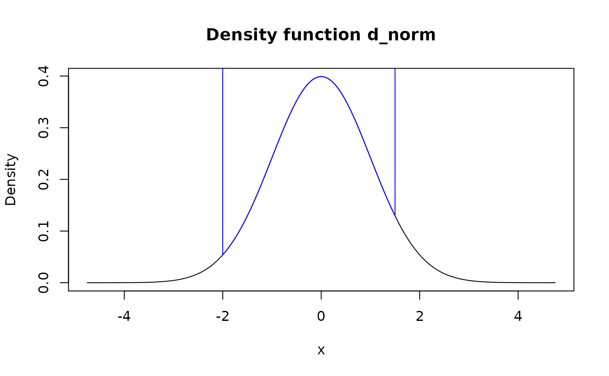
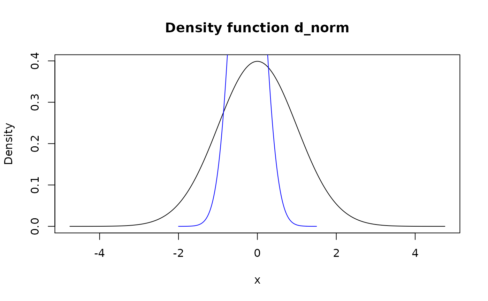

Modify support of pdqr-function using method of choice.
form_resupport(f, support, method = "reflect")| f | A pdqr-function. |
|---|---|
| support | Numeric vector with two increasing (or non-decreasing, see
Details) elements describing support of the output. Values can be |
| method | Resupport method. One of "reflect", "trim", "winsor", "linear". |
A pdqr-function with modified support and the same
class and type as f.
Method "reflect" takes a density "tails" to the left of support[1]
and to the right of support[2] and reflects them inside support. It means
that values of density inside and outside of supplied support are added
together in "symmetric fashion":
d(x) = d_f(x) + d_f(l - (x-l)) + d_f(r + (r-x)), where d_f is density of
input, d is density of output, l and r are left and right edges of
input support. This option is useful for repairing support of
new_*()'s output, as by default kernel density estimation in
density() adds tails to the range of input x values. For example, if
there is a need to ensure that distribution has only positive values, one can
do form_resupport(f, c(0, NA), method = "reflect"). Notes:
For "discrete" pdqr-functions that might result into creating new "x" values of distribution.
Reflection over support[1] is done only if it is strictly greater than
f's left edge of support. Reflection over support[2] - if f's right
edge is strictly smaller.
Method "trim" removes density "tails" outside of support, normalizes the
rest and creates appropriate pdqr-function.
Method "winsor" makes all density "tails" outside of input support
"squashed" inside it in "dirac-like" fashion. It means that probability from
both tails is moved inside support and becomes concentrated in 1e-8
neighborhood of nearest edge. This models a singular dirac distributions at
the edges of support. Note that support can represent single point,
in which case output has single element if f's type is "discrete" or is a
dirac-like distribution in case of "continuous" type.
Method "linear" transforms f's support linearly to be input support. For
example, if f's support is [0; 1] and support is c(-1, 1), linear
resupport is equivalent to 2*f - 1. Note that support can represent
single point with the same effect as in "winsor" method.
form_regrid() for changing grid (rows of "x_tbl" metadata) of
pdqr-function.
form_retype() for changing type of pdqr-function.
Other form functions: form_estimate,
form_mix, form_regrid,
form_retype, form_smooth,
form_tails, form_trans
set.seed(101)
d_norm <- as_d(dnorm)
d_dis <- new_d(data.frame(x = 1:4, prob = 1:4/10), "discrete")
# Method "reflect"
plot(d_norm)
# For "discrete" functions it might create new values
meta_x_tbl(form_resupport(d_dis, c(NA, 2.25), "reflect"))#> x prob cumprob
#> 1 1.0 0.1666667 0.1666667
#> 2 1.5 0.5000000 0.6666667
#> 3 2.0 0.3333333 1.0000000
# This is often useful to ensure constraints after `new_()`
x <- runif(1e4)
d_x <- new_d(x, "continuous")
plot(d_x)